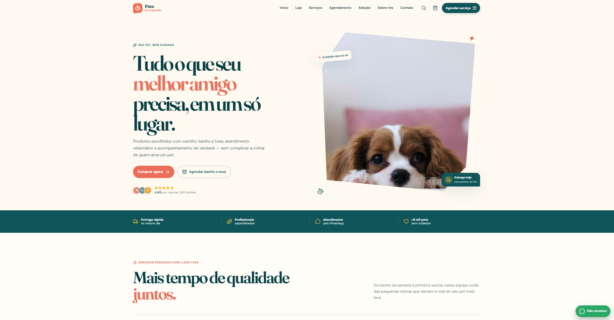
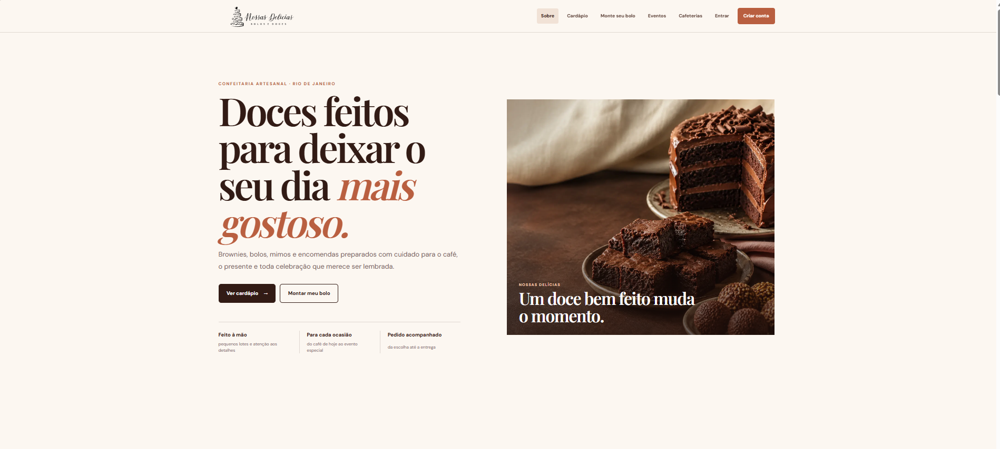
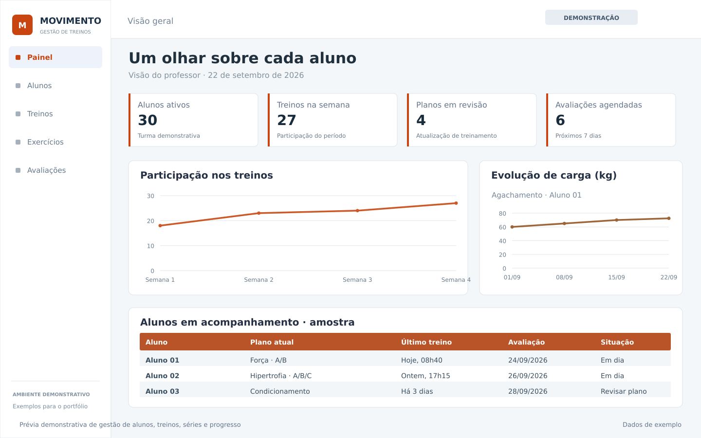
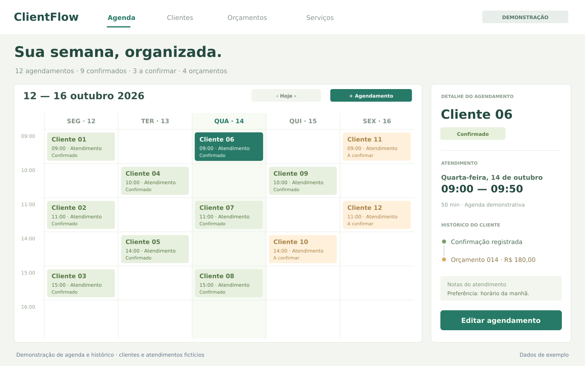
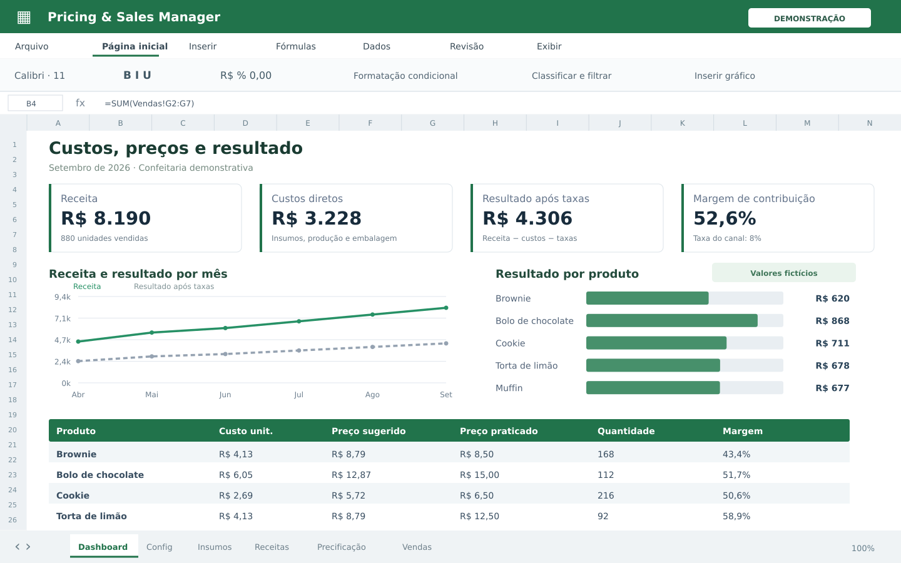
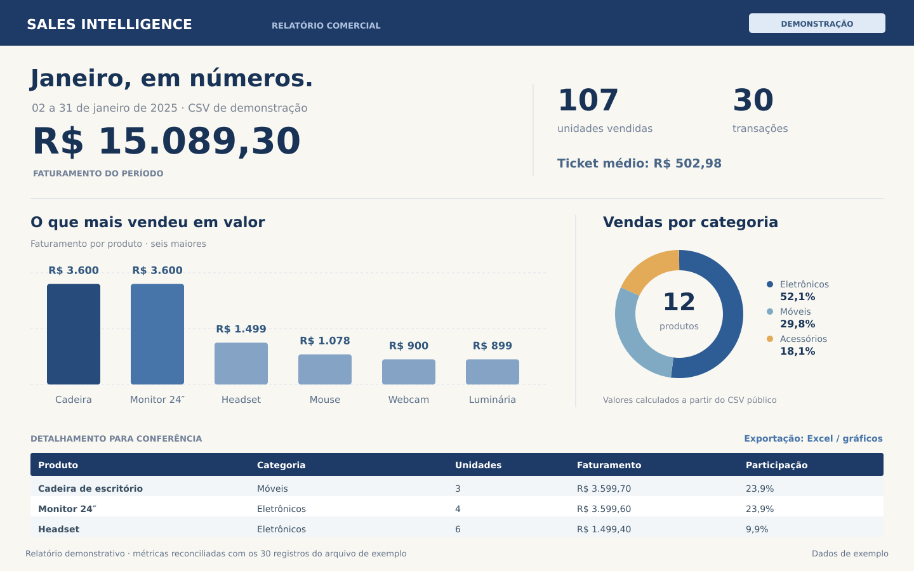

Imagem anonimizada
Imagem anonimizadaGestão financeira
Finance Manager
Uma base de gestão para organizar receitas, despesas, contas e permissões de acesso.
Veja antes de decidir
Conheça interfaces, propostas e demonstrações de financeiro, sites, sistemas para negócios e planilhas. Use os filtros para ver o que se aproxima da sua necessidade.
Imagem anonimizadaGestão financeira
Uma base de gestão para organizar receitas, despesas, contas e permissões de acesso.

Site e cardápio para cafeteria
Uma proposta de site com a identidade da cafeteria e um cardápio fácil de explorar.

Loja e agendamento para pet shop
Produtos, carrinho e agendamento em uma demonstração de experiência para pet shops.

Catálogo e pedidos para confeitaria
Uma plataforma que reúne catálogo, pedidos e montagem de bolos para uma confeitaria.

Prévia demonstrativa do produto
Gestão e treinos para academias
Um projeto para conectar a administração, os professores e os alunos de uma academia.

Prévia demonstrativa do produto
Agenda e relacionamento com clientes
Protótipo de organização de clientes, agenda, serviços e orçamentos em uma só interface.

Prévia demonstrativa do produto
Custos, preços e margem
Uma planilha demonstrativa que conecta insumos, receitas, formação de preços e vendas.

Prévia demonstrativa do produto
Análise de vendas
Um projeto para transformar arquivos de vendas em indicadores, filtros e relatórios.
Os exemplos apresentam estágios diferentes. Capturas anonimizadas e prévias ilustrativas estão identificadas. As funcionalidades da sua entrega são registradas na proposta.
Agenda, clientes, serviços e orçamentos reunidos em um protótipo de interface.
Protótipo frontendCatálogo, pedidos, montagem de bolos e operação interna em uma plataforma Django.
Em evoluçãoAdministração, professores e alunos em um MVP de gestão e acompanhamento de treinos.
MVP em branchModelagem de receitas, despesas, contas e permissões em uma base Django genérica.
Edição pública reduzidaUma planilha integrada de insumos, receitas, precificação e análise comercial.
Demo em ExcelCSV, indicadores, filtros e relatórios em um dashboard de análise de vendas.
Demo de análiseProposta de experiência institucional para cafeteria, com cardápio pesquisável.
Proposta de siteLoja, carrinho e agendamento demonstrativos em uma experiência responsiva.
MVP de interfaceUma conversa, uma proposta clara
Conte o que você precisa organizar. A proposta apresenta o que será entregue, o prazo, o investimento e as condições de suporte.
Você avalia a proposta antes de contratar.